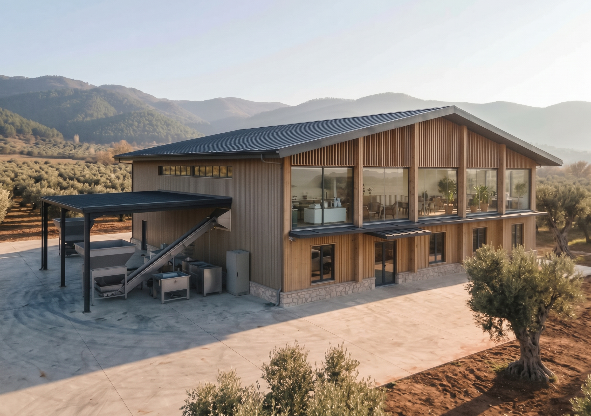

Facility
Getting ready for the 2027 season
Origino's processing facility is under construction on our own land in Yenikoy, Orhangazi.
It sits in the heart of the Marmara olive belt, within the Gemlik/Orhangazi terroir known across the industry.

Location
Olives move from harvest to press within hours, not days.
The facility sits in Yenikoy village, Orhangazi district, Bursa province, Turkey — one of the country's most established olive oil regions. Processing at the heart of the region means olives move from harvest to press within hours, not days.
Timeline
Construction is underway, with the facility targeted to be fully operational by the end of 2027. We are building this in the open: partners who engage with us now are working with a team that has nothing to hide about where we are in the process.
Production process
The facility is designed around a two-phase extraction system, the modern standard for quality and environmental performance: it produces less wastewater than traditional three-phase systems and preserves more of the oil's natural characteristics. This is a deliberate technical choice, not a minimum requirement.
Capacity
- Design capacity
- 500 t / year
- Buyers sought
- 4–5 partners
- Monthly volume
- 5–10 t each
- Relationship
- Long-term supply
Design capacity is 500 tons of olive oil per year. We are building relationships with 4–5 reliable buyers seeking consistent monthly volumes of 5–10 tons — long-term supply partners, not one-off transactions.
Quality & certification
We are building the facility to be audited from the day it opens.
Layout, hygiene zoning, traceability and documentation are being designed to the standards below now, so certification follows commissioning instead of a retrofit.
HACCP + ISO 22000
Food safety management system, the baseline every buyer asks for.
In preparationBRCGS Food Safety
GFSI-benchmarked standard expected by UK and European retail and private label.
In preparationIFS Food
GFSI-benchmarked standard required by many German, French and Italian retailers.
In preparationSFDA / ESMA
Product registration for Saudi Arabia and the UAE.
In preparation
Certification audits follow commissioning in 2027. We'll publish each certificate here once it is issued.